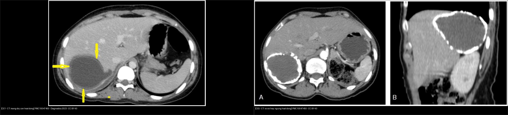
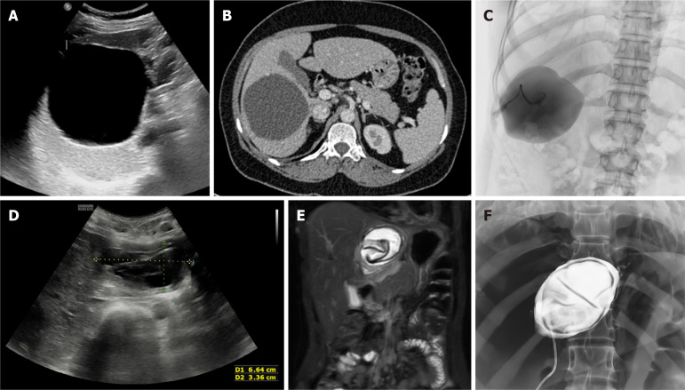
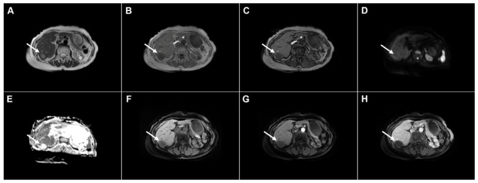
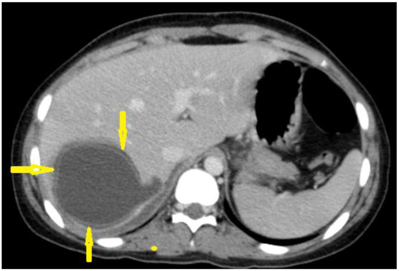
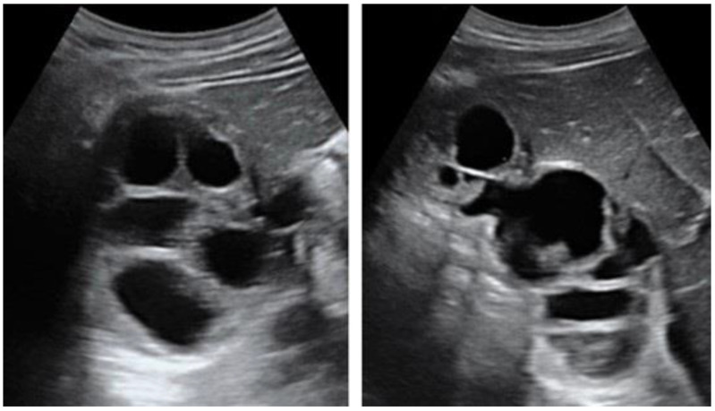
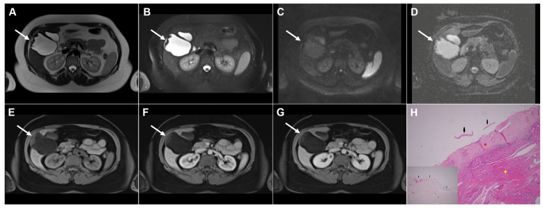
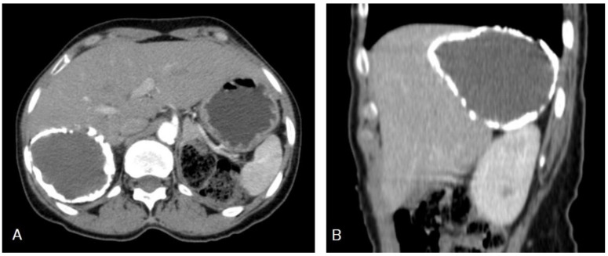
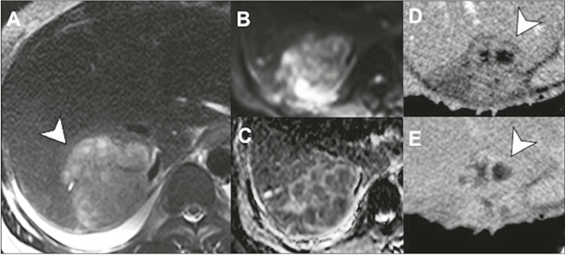
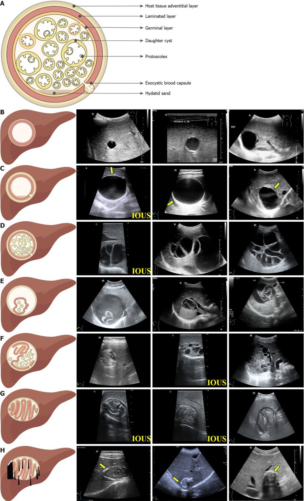

139 — Sán lá gan (nang sán / hepatic cystic echinococcosis): phân độ WHO-IWGE CE1–CE5, dấu màng tách – hoa súng, PAIR & albendazole
Tags: pattern:nang pattern:hoa-sung vung:gan score:WHO-IWGE-CE protocol:US incidentaloma:nang-gan
Mức chắc chắn (certainty): tổng hợp y văn (literature synthesis) — nhóm tự biên từ y văn mở, có ca nguyên văn CE1 (PMC10047450) và ca CE1–CE3a (PMC13163135); số liệu lấy nguyên từ bài gốc, ghi PMCID tại chỗ.
Câu chốt: nang sán không phải "nang gan đơn thuần có màng". Phân độ WHO-IWGE quyết định điều trị: CE1/CE3a → PAIR, CE2/CE3b → mổ/MoCAT, CE4/CE5 → theo dõi. Chọc hút mà không loại trừ thông mật = nguy cơ viêm xơ đường mật và sốc phản vệ.
1. Tổng quan bệnh học – cơ chế hình ảnh
1.1 Chu kỳ và cấu trúc nang
- Tác nhân: Echinococcus granulosus (sán dây chó). Chó/cáo là ký chủ chính, trứng bài qua phân; người nhiễm ngẫu nhiên qua thức ăn/nước nhiễm trứng. Trứng nở ở ruột → ấu trùng theo tĩnh mạch cửa tới gan (cơ quan thường gặp nhất), rồi phổi/cơ quan khác (PMC13163135).
- Cấu trúc 3 lớp (từ ngoài vào):
- Pericyst (vỏ xơ của ký chủ) — mô xơ–viêm, không phải mô sán; đây là phần còn lại sau điều trị, có thể xẹp và vôi hóa.
- Ectocyst / laminated membrane — màng không bào, dai, cho dinh dưỡng thấm qua.
- Endocyst / germinal membrane — lớp sinh sản, sinh brood capsules, protoscoleces, nang con (daughter cysts) và cát sán (hydatid sand) (PMC13163135).
- Vì sao nang "lành" về hình ảnh: nang lớn chậm, đồng tâm, vỏ xơ bao quanh không xâm lấn nhu mô → bờ nhẵn, không phù, không ngấm thuốc. Nhưng bên trong có thể hoạt động mạnh (CE1–CE3).
1.2 TẠI SAO tín hiệu/hình ảnh như vậy (vật lý + mô bệnh)
- Dịch nang: nước + protein + protoscoleces → T1 tối, T2 rất sáng, CT gần 0–15 HU, không ngấm cản quang.
- Màng tách (detached germinal membrane): màng endocyst mỏng, không mạch, tách khỏi vỏ xơ → trên MRI là đường T2 TỐI, lượn sóng nổi trong dịch sáng; khi tách hoàn toàn và xẹp → dấu hoa súng (water-lily sign) (PMC13163135).
- Nang con (daughter cysts): dịch có nồng độ protein/điện giải khác nang mẹ → T2 thấp hơn nang mẹ một chút, viền tối; trên US là "tổ ong" (honeycomb), "hoa hồng" (rosette), "bánh xe" (spoke-wheel) (PMC13122038, PMC10047450).
- Vôi hóa vỏ: canxi lắng ở pericyst → tăng đậm độ CT, T1/T2 tối, không ngấm; vôi hóa một phần KHÔNG đồng nghĩa sán chết (chỉ vôi hóa dày đặc gần toàn bộ mới coi là ngừng hoạt động) (PMC13122038).
- DWI: báo cáo cũ cho rằng CE1 có ADC thấp hơn nang đơn thuần do protoscoleces/đại phân tử; nghiên cứu lớn gần đây không thấy khác biệt có ý nghĩa → KHÔNG dùng ADC để phân biệt nang sán với nang đơn thuần (PMC13163135).
1.3 Ngưỡng định lượng quan trọng
- Phân độ WHO-IWGE: CL, CE1, CE2 = hoạt động; CE3a, CE3b = chuyển tiếp; CE4, CE5 = ngừng hoạt động (PMC13122038).
- Huyết thanh học phụ thuộc giai đoạn (ELISA, tổng hợp 14 nghiên cứu — PMC8081258):
- CE1: 75% (95% CI 58–92) · CE2: 94% (85–100) · CE3a: 97% (85–100) · CE3b: 89% (65–100) · CE4: 57% (34–81) · CE5: 56% (24–88).
- Hệ quả: huyết thanh âm không loại trừ CE4/CE5; ngược lại CE2/CE3a thường dương.
- Điều trị: PAIR cho CE1/CE3a; MoCAT/PEVAC cho CE2/CE3b; mổ cho CE2/CE3b > 5 cm hoặc biến chứng; CE4/CE5 theo dõi (PMC13122038).
- Biến chứng thủ thuật (so sánh 734 mổ vs 255 PAIR — PMC12865369): sốc phản vệ 1,6% vs 0,3%; tái tích dịch 4,7% vs 1,2%; rò mật–nang 14,6% vs 14,9%; nằm viện 7,3 vs 3,1 ngày. Thể tích nang lớn (~700 mL so với ~350 mL) làm tăng nguy cơ rò mật.
- Theo dõi: chụp lại 3–6 tháng, sau đó hằng năm ≥ 5 năm; đáp ứng hoàn toàn chỉ đánh giá được sau 12 tháng (PMC13122038).
2. Mẫu hình + chẩn đoán phân biệt theo vị trí (Gamut)
2.1 Theo "độ phức tạp" của nang
- Một ngăn, thành mỏng, không vách: nang gan đơn thuần, CE1, CL, nang biểu mô, di căn nang một ổ.
- Nhiều ngăn/nang con: CE2, CE3b, MCN-L, cystadenofibroma, nang nhầy, di căn nang (neuroendocrine).
- "Đặc giả u": CE4 (bóng len/cerebroid), CE5 (vôi hóa dày), áp-xe mạn, u hoại tử, máu tụ cũ.
- Có màng tách/mức dịch–màng: CE3a (hoa súng), máu tụ đang tiêu, nang xuất huyết.
2.2 Theo vị trí & bối cảnh
- Gan phải, dưới bao: dễ vỡ do chấn thương → sốc phản vệ, gieo rắc phúc mạc.
- Gan trái/hạ phân thùy: chèn ép dạ dày, tá tràng, đường mật.
- Rốn gan/ống mật: vỡ vào đường mật → vàng da, viêm đường mật, mảnh màng trong OMC (PMC13163135 Fig10/13).
- Ngoài gan: phổi (ho ra máu, hoa súng), lách, thận, tim, xương — cùng nguyên lý nhưng không dùng phân độ CE cho xương (thể xương xâm lấn).
2.3 Mnemonic "CYST"
- Cystic (một ngăn) → CE1/nang đơn thuần.
- Young cysts (nang con) → CE2/CE3b.
- Separated membrane → CE3a.
- Total calcification → CE5 (ngừng hoạt động).
3. Bảng so sánh phân biệt (ma trận đối chiếu)
| Thực thể (entity) | Hình ảnh điển hình | Chốt vào (rule-in) | Chốt loại (rule-out) | Gợi ý xác nhận |
|---|---|---|---|---|
| CE1 | Nang một ngăn, màng đôi (double-wall), có thể "bông tuyết" (cát sán) | Màng đôi + cát sán + huyết thanh dương | Vách/nốt ngấm, màng tách rõ → giai đoạn khác/u | US + ELISA; PAIR nếu > 5 cm |
| CE2 | Nang con chiếm toàn bộ nang mẹ: "tổ ong", "hoa hồng", "bánh xe" | Nang con + không ngấm + huyết thanh thường dương (94%) | Nang con không thấy, chỉ vách mảnh → MCN | US/CT/MRI; mổ hoặc MoCAT |
| CE3a | Màng tách lượn sóng trong dịch, hoa súng | Màng tách + màng T2 tối + không ngấm | Màng tách giả do vách/u nhú ngấm → MCN/IPNB | MRI/MRCP; PAIR |
| CE3b | Vài nang con trong mô đặc không mạch ("phô mai Thụy Sĩ") | Nang con + matrix đặc không ngấm | Thành phần đặc ngấm thuốc → u | CE-CT/MRI; mổ/MoCAT |
| CE4 | Khối giả đặc, bóng len/cerebroid, không nang con, không ngấm | Đặc + không ngấm + vỏ mỏng + huyết thanh có thể âm | Ngấm thuốc, xâm lấn → ung thư | MRI/CT đa thì; theo dõi |
| CE5 | Vôi hóa dày đặc vỏ, bóng sau, không ngấm | Vôi hóa gần toàn bộ + không ngấm | Vôi hóa một phần → còn hoạt động | CT; theo dõi |
| Nang gan đơn thuần | 0–15 HU, thành không thấy, không vách/nốt | Thuần dịch + không ngấm + không màng | Màng đôi/nang con/màng tách → sán | US; không cần điều trị |
| MCN-L | Nang lớn nhiều ngăn, vách ngấm, nữ trung niên | Vách/đặc ngấm + nữ + lớn | Nang con/màng tách/không ngấm → sán | MRI; cắt trọn, không hút |
| Áp-xe gan | Dày thành, phù quanh, hạn chế khuếch tán, khí trong ổ | Sốt + đau + thành ngấm + khí | Nang con/màng tách → sán | CT/MRI + cấy; dẫn lưu |

Trái: CE1 — nang một ngăn, màng đôi (mũi tên), dịch đồng nhất. Phải: CE5 — vỏ vôi hóa dày gần toàn bộ, không còn hoạt động. Cả hai CC BY 4.0; ảnh ghép letterbox giữ nguyên tỷ lệ.3.1 Đọc phân độ theo 3 câu hỏi
- Có nang con không? → có = CE2/CE3b.
- Có màng tách không? → có = CE3a (nếu màng tách đơn thuần) hoặc CE3b (nếu kèm matrix đặc/nang con).
- Có đặc/vôi hóa không? → đặc không ngấm = CE4; vôi hóa dày = CE5.
4. Protocol chụp + hệ phân độ/điểm chuẩn hóa
4.1 Protocol
- Siêu âm bụng: phương thức đầu tay và là nền của phân độ WHO-IWGE; đánh giá thành, vách, nang con, màng tách, cát sán.
- CT bụng có/không cản quang: khi nang lớn, nghi biến chứng, cần đánh giá vôi hóa, chèn ép, rò mật, hoặc trước can thiệp. CE4 giả u cần CT/MRI có cản quang để chứng minh KHÔNG ngấm.
- MRI gan mật + MRCP: khi nghi thông mật/rò mật–nang, nang không điển hình, hoặc cần phân biệt với MCN/ung thư. MRI cho thấy màng tách T2 tối, nang con tín hiệu thấp hơn nang mẹ, matrix đặc không ngấm (PMC13163135).
- Huyết thanh: ELISA/hemagglutination/western blot; âm không loại trừ CE4/CE5; dương không chứng minh còn hoạt động (kháng thể tồn tại sau điều trị).
- Trước can thiệp: bắt buộc loại trừ thông mật–nang bằng xét nghiệm bilirubin trong dịch hút, soi dịch có mật, hoặc bơm cản quang thấy đường mật. Nếu có thông mật → không dùng scolicidal qua PAIR, chuyển S-CAT/ERCP (PMC13122038).
4.2 Phân độ & xử trí (WHO-IWGE)
- CE1/CE3a:
- < 5 cm: benzimidazole (albendazole 10–15 mg/kg/ngày, chia 2 lần) 3–6 tháng.
- 5–10 cm: PAIR + benzimidazole.
- > 10 cm: PAIR hoặc S-CAT + benzimidazole; mổ là lựa chọn thay thế.
- CE2/CE3b:
- < 5 cm: benzimidazole, theo dõi sát; thất bại → mổ.
- > 5 cm: mổ (ưu tiên); MoCAT/PEVAC là thay thế ở trung tâm có kinh nghiệm.
- CE4/CE5: theo dõi ("watch and wait") nếu không triệu chứng; can thiệp khi chèn ép/vỡ/nhiễm trùng.
- Benzimidazole quanh thủ thuật: bắt đầu 1 ngày trước, tiếp tục 1 tháng sau nếu không có tràn dịch trong mổ (PMC13122038).
- Chống chỉ định/không nên: nang thông mật (PAIR), thai 3 tháng đầu, nang không tiếp cận được, rối loạn đông máu.
- Theo dõi sau điều trị: 3–6 tháng, sau đó hằng năm ≥ 5 năm; đáp ứng hoàn toàn đánh giá sau 12 tháng.
 Sơ đồ tóm tắt: CE1/CE3a → PAIR; CE2/CE3b > 5 cm → mổ (MoCAT là thay thế); CE4/CE5 → theo dõi. Nguồn: Agarwal D et al., World J Radiol 2026, PMC13122038, CC BY-NC 4.0 (giữ nguyên bản).
Sơ đồ tóm tắt: CE1/CE3a → PAIR; CE2/CE3b > 5 cm → mổ (MoCAT là thay thế); CE4/CE5 → theo dõi. Nguồn: Agarwal D et al., World J Radiol 2026, PMC13122038, CC BY-NC 4.0 (giữ nguyên bản).

US/CT xác định CE1; fluoroscopy bơm cản quang xác nhận không thông mật–nang rồi mới bơm scolicidal; sau PAIR, màng tách còn lại trong khoang. Nguồn: PMC13122038, CC BY-NC 4.0 (giữ nguyên bản).flowchart TD
A[Nang gan nghi sán — phân độ WHO-IWGE] --> B{Hoạt động?}
B -->|CE1 hoặc CE3a| C{Kích thước}
C -->|< 5 cm| D[Benzimidazole 3–6 tháng]
C -->|5–10 cm| E[PAIR + benzimidazole]
C -->|> 10 cm| F[PAIR hoặc S-CAT + benzimidazole]
B -->|CE2 hoặc CE3b| G{Kích thước}
G -->|< 5 cm| H[Benzimidazole + theo dõi]
G -->|> 5 cm| I[Mổ — hoặc MoCAT/PEVAC]
B -->|CE4 hoặc CE5| J[Theo dõi — can thiệp nếu biến chứng]
E --> K{Thông mật–nang?}
F --> K
K -->|Có| L[Dừng PAIR → S-CAT/ERCP]
K -->|Không| M[Theo dõi 3–6 tháng, sau đó hằng năm ≥ 5 năm]
5. Biến thể bình thường và cạm bẫy
- CL vs nang đơn thuần: CL không có vỏ rõ, hình ảnh không phân biệt được với nang gan lành → không chẩn đoán sán chỉ dựa vào hình ảnh khi không có bối cảnh dịch tễ/huyết thanh (PMC13163135).
- Vôi hóa một phần ≠ chết: chỉ vôi hóa dày đặc gần toàn bộ mới coi là CE5 ngừng hoạt động; vôi hóa vỏ rải rác vẫn có thể còn nang con hoạt động (PMC13122038).
- Huyết thanh âm ở CE4/CE5: Se chỉ ~56–57% → âm không loại trừ; đừng bỏ theo dõi.
- Màng tách vs vách: màng tách không ngấm, mỏng, lượn sóng, di động trong dịch; vách MCN ngấm thuốc, dày, cố định. Nhầm → chọc/hút sai.
- Rò mật–nang: có thể không thấy trên CT; phải kiểm tra bilirubin dịch hút trước khi bơm scolicidal. Bơm nhầm → viêm xơ đường mật.
- Vỡ nang: đau đột ngột, sốc phản vệ, gieo rắc phúc mạc/phổi; không chọc hút nang dưới bao lớn khi chưa chuẩn bị hồi sức.
- Sán phổi: dấu hoa súng/liềm khí; không nhầm với áp-xe phổi — bối cảnh dịch tễ + huyết thanh.
- Sán thể hang (alveolar echinococcosis): khác hoàn toàn — xâm lấn, không vỏ, nhiều vi nang T2 tối, ngấm thuốc viền, FDG-PET dương; không dùng PAIR (PMC13163135).

CE4 trên MRI: tổn thương giả đặc, tín hiệu hỗn hợp, không ngấm thuốc ở thì động mạch/TM cửa và không hạn chế khuếch tán — điểm phân biệt với ung thư. Nguồn: Djokic Kovač J et al., Diagnostics (Basel) 2026, PMC13163135, CC BY 4.0.6. Tự lượng giá — Blind Quiz
Ca 1 — Nữ 15 tuổi, đau bụng phải, CT có nang gan. Mô tả trước khi mở đáp án.

- Hỏi: dấu hiệu nào gợi nang sán? Chẩn đoán phân biệt với nang đơn thuần dựa vào đâu?
Bấm để hiện đáp án
- Findings: nang một ngăn, dịch đồng nhất, màng đôi (hai đường viền mảnh, mũi tên), không ngấm thuốc, không nang con.
- Chẩn đoán: CE1 (hoạt động).
- Vì sao: màng đôi = endocyst + pericyst; nang đơn thuần chỉ có một thành mỏng, không tách lớp. Huyết thanh ELISA hỗ trợ (Se CE1 ~75%).
- Xử trí: nếu > 5 cm → PAIR + albendazole; < 5 cm → albendazole.
- Nguồn: Alshoabi SA et al., Diagnostics (Basel) 2023, PMC10047450, CC BY 4.0.
Ca 2 — Nữ 17 tuổi, đau bụng, siêu âm gan phải có nang "nhiều ngăn".

- Hỏi: gọi tên dấu hiệu; phân độ WHO? Điều trị khác CE1 ở đâu?
Bấm để hiện đáp án
- Findings: nang lớn chứa nhiều nang con hình tròn, vách mảnh → "tổ ong"/"bánh xe".
- Chẩn đoán: CE2 (hoạt động).
- Điều trị: CE2 > 5 cm → mổ (hoặc MoCAT/PEVAC); không PAIR vì nang con làm dẫn lưu không hoàn toàn, dễ tái tích dịch.
- Nguồn: PMC10047450, CC BY 4.0.
Ca 3 — Nữ 47 tuổi, nang gan phải, MRI T2 có "sợi lượn sóng" trong dịch.

- Hỏi: dấu hiệu tên gì? Vì sao màng tối trên T2? Xử trí?
Bấm để hiện đáp án
- Findings: nang T2 rất sáng, màng mỏng T2 tối, lượn sóng, bám/di động trong dịch; không ngấm.
- Chẩn đoán: CE3a — dấu hoa súng (water-lily sign) khi màng xẹp hoàn toàn.
- Vì sao tối: màng không có nước tự do, cấu trúc protein/fibrous → T2 ngắn.
- Xử trí: PAIR + albendazole (CE3a đáp ứng tốt).
- Nguồn: Djokic Kovač J et al., Diagnostics (Basel) 2026, PMC13163135, CC BY 4.0.
Ca 4 — Nam 50 tuổi, nang gan trái, CT có vôi hóa vỏ. Có cần điều trị?

- Hỏi: phân độ? Vì sao không cần PAIR? Theo dõi thế nào?
Bấm để hiện đáp án
- Findings: nang một ngăn, vôi hóa dày gần toàn bộ vỏ, không nang con, không ngấm.
- Chẩn đoán: CE5 (ngừng hoạt động).
- Xử trí: theo dõi, không PAIR/mổ nếu không triệu chứng; huyết thanh có thể âm (Se ~56%).
- Cạm bẫy: vôi hóa một phần không đủ kết luận chết.
- Nguồn: PMC10047450, CC BY 4.0.
Ca 5 — Nam 38 tuổi, sốt, đau hạ sườn phải; MRI có khối "giả đặc" trong gan.

- Hỏi: vì sao không phải CE4? Dấu hiệu nào chốt áp-xe?
Bấm để hiện đáp án
- Findings: tổn thương thành dày, phù quanh, hạn chế khuếch tán trung tâm, ngấm viền; bệnh cảnh sốt.
- Chẩn đoán: áp-xe gan (không phải CE4).
- Chốt: CE4 không ngấm thuốc, không phù quanh, không hạn chế khuếch tán mạnh; áp-xe ngấm viền + DWI sáng + sốt.
- Nguồn: Gomes MM et al., Radiol Bras 2025, PMC12071424, CC BY 4.0.
Ca 6 — Sơ đồ: đọc phân độ và chọn điều trị theo WHO.

- Hỏi: từ trên xuống, các hàng B–H tương ứng giai đoạn nào? Hàng nào cần PAIR?
Bấm để hiện đáp án
- Giải mã: sơ đồ cấu trúc (A) + các giai đoạn: B = CL/CE1 (một ngăn), C = CE1 (màng đôi), D = CE2 (nang con), E = CE3a (màng tách/hoa súng), F = CE3b (nang con + matrix đặc), G = CE4 (bóng len), H = CE5 (vôi hóa).
- PAIR: CE1 và CE3a (thường > 5 cm).
- Nguồn: Tao Y et al., World J Gastroenterol 2024, PMC11514533, CC BY-NC 4.0 (giữ nguyên bản).
Bài liên quan chéo
- 100 – Tổng quan hệ Bụng
- 123 – Nang gan & bệnh gan đa nang
- 129 – IPNB & u nhầy đường mật
- 131 – Tắc mật
- 621 – Nang sán lá phổi ở trẻ
- 632 – Theo dõi dài hạn & dự phòng tái phát nang sán: huyết thanh, albendazole chu kỳ, PAIR, sốc phản vệ (bài tiếp theo: sau điều trị)
- 934 – Sốc phản vệ do vỡ nang sán khi can thiệp: phân tầng nguy cơ & phác đồ tại bàn chọc (phía phòng can thiệp)
- 900 – Đại cương can thiệp (dẫn lưu/PAIR)
Ảnh
- Tên file:
139_..._PMCxxxxx-FigN.jpg; nguồn + giấy phép từng ảnh trongimages/CREDITS.md. - Ảnh CC BY-NC (PMC13122038, PMC11514533) giữ nguyên bản, không ghép/cắt.
- Ảnh ghép
composite_139_CE1-hoat-dong-vs-CE5-ngung-hoat-dong.jpgchỉ dùng ảnh CC BY 4.0, letterbox nền đen, giữ tỷ lệ gốc.
Không dùng để chẩn đoán độc lập khi chưa có người hướng dẫn.